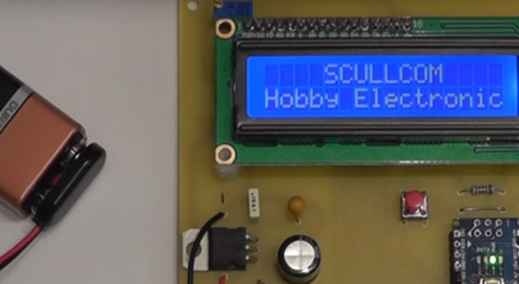

An OP Amp or Operational Amplifier is a differential input, single ended output amplifier. The gain of these amplifiers is determined by an external feedback element which is usually a resistor network. The symbol for a OP Amp is below: The name “Operational Amplifier” originated from the fact that devices of this design were originally […]
Resistor Basics
A resistor is a passive two-terminal electrical component that implements electrical resistance as a circuit element. Resistors act to reduce current flow, and, at the same time, act to lower voltage levels within circuits. RESISTOR TYPES Carbon Composition These are general purpose resistors with excellent transient and surge handling capabilities. The resistance value of this […]
Design & Build a GPS locked Frequency Standard – Part 3
In Part 3 of this project we will add a keypad for direct frequency entry and program the GPS module on the fly directly from the Arduino Nano. We will also add a battery check feature and make some changes to the original circuit. A new PCB design will allow all components to be on […]
Design & Build a GPS locked Frequency Standard – Part 2
In Part 2 of this project we will improve the reception of the GPS module and build the project on to printed circuit boards and test the unit. In addition we will look at ways of converting the 10MHz square wave to a sine wave. Below are links to download the schematics and PCB […]
Design & Build a GPS locked Frequency Reference Standard – Part 1
In this project we will design and build a 10MHz GPS locked frequency standard with additional outputs of 1MHz, 100KHz, 10KHz, 1KHz and 100Hz. The output frequency will also be present even when no satellite lock is available but will be free running. We will use a Arduino Nano and LCD display to indicate if […]
Design & Build 6½ Digit Millivolt Meter – Part 4
This is a quick update on the Millivolt Meter Project. Changes to the input circuitry and a new software version. Latest schematic and PCB can be downloaded from link below: http://www.scullcom.com/Millivolt_Meter_Ver4.pdf http://www.scullcom.com/Millivolt_Meter_PCB_Ver4.pdf Below are links to the new software (version 7.0): http://www.scullcom.com/SHMMSimple.ino Also the GitHub link below: https://github.com/int2str/SHMMSimple PCB available from OSH Park A PCB […]
Design & Build a 6½ Digit Millivolt Meter – Part 3
In Part 3 of this project I cover Improvements to the input protection. We also add two new features which include storage of calibration setting in EEPROM for automatic calibration at switch-on. The other new feature is an additional button to allow user to set number of displayed decimal place. Below is the link to […]

Design & Build a 6½ Digit Millivolt Meter – Part 2
In Part 2 of this project I cover the Arduino software needed, calibration and comparison with professional 6½ Digit Bench Multimeter. Below are the links for the software (which I have included detailed comments) also the component layout for the PCB: http://www.scullcom.com/LTC2400_voltmeter_software_ver3.ino http://www.scullcom.com/Millivolt_Meter_layout.pdf
Design & Build 6½ Digit Millivolt Meter – Part 1
In this project we will design & build a 6½ Digit Millivolt Meter with calibration. In this first part of this project we design and build the circuit and do an initial test. In part 2 we will cover the software and final test and build. Below are links to the full schematic and PCB […]
Design & Build a Milliohm Meter
In this project we will design and build a milliohm meter which is capable of measuring low resistance from 2 ohm to 0.1 milliohm with an accuracy of 0.1% or better. The unit will be easy to build and low cost. Below are the links to the circuit diagram and the PCB artwork and layout: […]